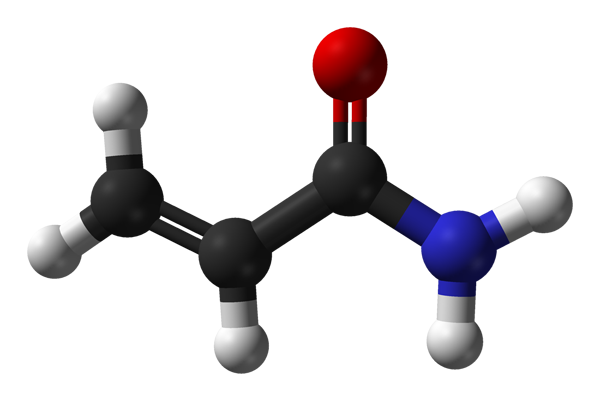

Acrylamide is a compound that has been used in all sorts of industrial and manufacturing processes since the 1950's and it has long since been classified as toxic to both humans and animals.
In 2002, acrylamide was discovered for the first time in foods. This isn't to say it wasn't there before but merely that this was the first time anyone had tested foods for its presence. Although its formation isn't fully understood, it appears to result from a reaction between simple sugars and the amino acid asparagine when starchy foods are subjected to temperatures of over 120oc. This process, known as the Maillard reaction, also causes the food to 'brown' and tends to make it more tasty. Clearly, acrylamide has been a part of the human diet for a very long time but only very recently have large amounts found their way into animals.
The highest levels of acrylamide tend to be found in starchy foods like grains and potatoes that have been fried, baked, roasted or extruded at high temperatures. The higher the cooking temperature and the longer the food is subjected to that temperature, the more acrylamide is produced.
For humans the foods with the highest acrylamide levels include crisps (potato chips), chips (french fries), bread, coffee and biscuits.
For pets, any food that contains carbs and has been cooked - which accounts for the vast majority of dog and cat foods - is likely to contain at least some acrylamide. Dry, extruded kibbles and especially those with a high proportion of starch are the main cause for concern although baked foods are also liable to contain moderate levels of acrylamide. Wet foods (tins, pouches, trays etc.) may also contain some acrylamide since they have to be sterilised at temperatures of over 120oc and even cold pressed pet foods might not be completely acrylamide free as the grain component has to be pre-cooked to make it digestible for dogs.
Since acrylamide is not an ingredient nor a nutrient, you won't ever see it listed on either the ingredients list or the typical analysis but if the food contains carbs and has been cooked, you can be pretty confident that it's in there.
What does acrylamide do?
Acrylamide itself doesn't do much but once it has been absorbed into an animal's cells, it is converted into a series of other compounds, some of which appear to react with the cell's DNA resulting in genetic mutations and a much higher incidence of tumour formation. Despite plenty of ongoing studies, the overall risk posed to humans by dietary acrylamide is unclear. What is clear though is the effect it has on animals:
According to the European Food Safety Authority "studies on laboratory animals [including rats, mice, monkeys, cats and dogs] have shown that exposure to acrylamide through the diet greatly increased the likelihood of developing gene mutations and tumours in various organs" [1].
Similar animal studies have also identified a link between acrylamide and neurotoxicity, adverse effects on male reproduction and developmental problems [2].
Acrylamide and pets
Our cats and dogs are uniquely susceptible to acrylamide poisoning for three reasons:
Many commercially produced pet foods are relatively high in starch
The techniques used to make pet foods often involve very high temperatures (sometimes up to 200oc in the case of extrusion)
Pets are often fed the same, single food for long periods of time
The figures
Although there aren't yet any definitive toxic levels of acrylamide for dogs or cats, in mice, 170µg per kilogram of body weight per day was found to be enough to induce tumour formation while 430µg per kg of body weight per day resulted in neurological problems in rats [2].
The EU has also issued some 'indicative values' for acrylamide in human foods (but not yet for animal foods). These values are used not as maximum or safe levels (as none have yet been set for foods) but as benchmarks to trigger investigations. For example, if a rusk or biscuit intended for infants contains more than 250µg/kg acrylamide then the EU recommends the undertaking of an investigation and measures to reduce acrylamide levels in the food. In other processed cereal based foods for infants, the indicative level is 100µg/kg. [3]
In a 2012 study [4], 5 different brands of dry dog food were found to contain acrylamide levels of between 106 - 358 µg/kg - considerably higher than some of the 'indicative levels' for human infants.
However, assuming a daily feeding amount of 1.5% of body weight (roughly the industry standard for adult dogs), these levels would only equate to an approximate daily acrylamide intake of 1.6 - 5µg per kilo of body weight which is far less than the levels shown to be problematic in mice and rats. Nevertheless, since the effects of long term exposure are unknown and since it is unclear how long acrylamides and their metabolites might linger in the system, we recommend strict caution.
What should I do?
To help minimise your pet's exposure to acrylamide, we would recommend following these simple steps. All of them will not only reduce acrylamides in the diet but will also provide for a much healthier, more balanced diet in general.
1. A good food
Choose the best food within your budget, either by examining the ingredients list or by entering your dog's details on our Dog Food Directory. Look for foods that are not overloaded with starchy fillers like white rice, white potatoes, potato starch, pea starch and so on. Foods that we give a higher rating will contain less of these fillers as well as fewer nasties in general.
2. Processing matters
In general, the lower the temperature of manufacture, the less acrylamide a food is likely to contain. Raw foods, for example, are completely acrylamide free as are grain-free freeze-dried and air-dried foods.
Even between dry foods, there is likely to be a huge difference in acrylamide content depending on how the kibbles are made. Traditional extrusion (which accounts for the vast majority of dried foods) is likely to produce much higher levels of acrylamides than low temperature extrusion, baking or cold-pressing. If you are in any doubt about your chosen dry food, your best bet would be to put your concerns directly to the manufacturer.
3. Mix it up!
Variety is being recognised more and more as a key component of any truly balanced, healthy diet. By varying your dog's diet you can reduce the risk of any problematic ingredient or component from reaching dangerous levels and also minimise the risk of any deficiencies developing. How you go about it is up to you but many owners opt to mix dry food with wet, raw and/or home cooked foods as well as occasionally alternating between brands.
A note for home-cooks...
If you're home cooking for your dog, it would also be much better to boil or steam carbohydrates than to fry, bake or roast them.
Acrylamides may be huge worry for all of us and, as the research continues, you can expect to hear a lot more about them. With the information that is currently available it seems that our pets face the biggest risk so if your dog or cat is one of the millions out there that are fed primarily on low grade dry dog food, now is the time to start making some changes and please, spread the word.
References
1. European Food Safety Authority Acrylamide FAQ. Link
2. Draft Scientific Opinion on Acrylamide in Food. EFSA Panel on Contaminants in the Food Chain (CONTAM). Link
3. European Commission recommendation on investigations into the levels of acrylamide in food, 10.1.2011. Link
4. Veselá, H, Emanuel Š. Determination of acrylamide in dry feedstuff for dogs and cats. Acta Veterinaria Brno. 2013: 82 (2): 203-208. Link